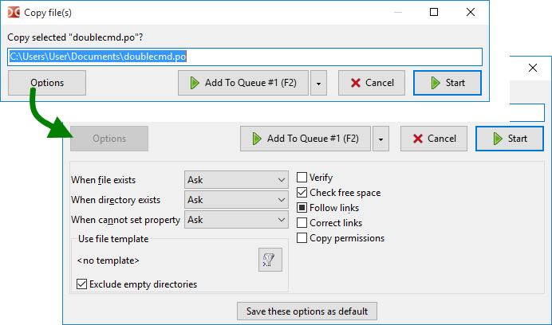

复制或移动文件的确认窗口，具有更改某些参数的能力。这两个操作的窗口仅在少数参数上有所不同，因此将一起描述。

1) 可以通过 F5 (复制)、 Shift+F5 (在同一目录中复制) 和 F6 (移动) 键、功能键按钮栏上的按钮或内部命令 (cm_Copy、cm_CopySamePanel 和 cm_Rename) 调用。此对话窗口在我们拖放文件时也会出现（如果启用了 拖放后显示确认对话框）。
2) 窗口显示一个可编辑字段，包含目标目录和文件掩码（或文件名，如果只有一个），我们可以手动更改目标路径和文件名。使用 F5 或 F6 我们可以按以下顺序切换选择：基本文件名、文件名、扩展名、路径、全部。如果未指定目标目录（cm_CopySamePanel 或手动编辑），文件将被复制到源目录。
3) 文件掩码决定了在复制或移动时文件将如何重命名（符号 * 表示匹配任意数量的字符，符号 ? 表示任意一个字符）。例如，我们可以指定 *.*.bak ，为所有复制的文件添加扩展名 .bak 。或者，例如，使用 ????.* 并将名称修剪为前四个字符。使用 *.ext ，我们可以将所有复制文件的扩展名替换为 ext 。如果掩码不适用，名称将保持不变。
几个按钮：
开始 和 取消 – 开始或取消操作。
添加到队列 – 将任务添加到文件操作队列中。如果我们同时有多个任务在运行，这样做很方便：我们可以更改队列中操作的顺序，停止或暂停任务。可以通过两种方式调用文件操作列表窗口：使用操作查看器项在显示菜单中，或 Alt+V （内部命令 cm_OperationsViewer ）。
选项 – 扩展其他选项。
第一组选项决定在解决名称冲突或无法设置文件属性时采取的行动：
当文件存在时 – 如果目标目录中已经存在同名文件。操作：询问，覆盖，覆盖较旧的，跳过。
当目录存在时 – 如果目标目录中已经存在同名文件夹。操作：询问，合并，跳过。
无法设置属性时 – 当无法设置文件时间、属性等时该怎么办，例如，由于目标目录中的文件系统限制。操作：询问，不再设置，忽略错误。
询问（默认情况下）提供更多可能的操作（见下文）。
下一个组是一个过滤器，能够指定要复制或移动的文件（文件掩码、年龄等）。在这里我们可以看到所选的模板和：
选择模板按钮 (  ) 打开一个窗口，显示已保存模板的列表，并可以添加一个新模板。
) 打开一个窗口，显示已保存模板的列表，并可以添加一个新模板。
排除空目录 – 如果启用，仅非空目录将被复制或移动。仅适用于模板。
以下参数的列表将根据文件操作类型和操作系统系列而有所不同。
验证 – 如果启用，Double Commander 将比较源文件和目标目录中的复制文件：逐字节比较（Windows）或 BLAKE2 校验和（Linux 和其他系统）。Double Commander 将尽量减少磁盘缓存的影响；如果文件系统不支持对文件的直接访问（例如，tmpfs），程序将报告验证失败。请记住，此功能会显著降低操作速度。在 macOS 中不可用。
检查可用空间 – 在复制文件之前，Double Commander将检查目标目录中是否有足够的可用磁盘空间。
保留空间 – 如果启用，Double Commander 将使用磁盘空间的预分配，这将减少文件碎片化的可能性。此外，这也是创建文件的更快方式。在 Windows 中，Double Commander 始终保留空间。
跟随链接 – 如果启用，Double Commander将把指向文件夹的符号链接视为常规文件夹并复制其内容；而不是文件链接，这些链接的目标文件将被复制。未确定的复选框状态（三态）：程序将每次询问应该执行什么操作。
正确链接 – 如果启用，Double Commander将检查链接，并在必要时根据目标目录修正其目标路径。如果指定了相对路径，则修正后的路径也将以相对方式写出。
复制属性 – 如果启用，源文件的属性将被复制，否则将使用当前用户的默认值，通常为 664（文件）或 775（文件夹）。另请参见 <CopyXattributes> 的描述。对于 Windows：请参见 <CopyAttributes> 的描述。
删除只读标志 – 如果启用，Double Commander 将添加 "w" 属性（Linux）。
复制日期/时间 – 如果启用，源文件的修改日期将被复制，否则将使用当前日期。对于 Windows：请参阅<CopyTime>的描述。
复制所有权 – 如果未启用，所有者将是代表其启动程序的用户。
复制权限 – 允许复制特定于 NTFS 文件系统的权限，否则将使用当前用户的权限（程序以该用户的身份启动）。仅限 Windows。
写时复制 – 支持 Btrfs 文件系统的一个特性：默认情况下，Btrfs 对所有本地文件使用写时复制（COW）原则。在 Windows 中不可用。
注意：从归档中复制文件时，仅可用 文件存在时 参数。从文件系统插件（WFX）复制文件时，将提供多个参数：文件存在时、复制日期/时间 和 在后台工作（单独连接）。最后一个参数禁止文件操作进度窗口阻塞Double Commander的主窗口。
将这些选项保存为默认 – 将当前值设置为下一个复制/移动操作的默认值。
另一种复制或移动文件的方法：我们可以使用 复制-粘贴 或 剪切-粘贴 命令，通过键盘（ Ctrl+C / Ctrl+V 或 Ctrl+X / Ctrl+V）或 上下文菜单 中的相应项目。
在这种情况下，操作将不显示确认对话框。Double Commander将使用保存为默认设置的操作设置，除了验证参数（请参见上面的描述）。
如果一个文件被复制并粘贴到活动面板中（在同一目录下），将会创建重复文件，并使用来自文件操作设置的模板进行自动重命名。
此对话框显示操作进度的详细信息：两个进度条（用于当前处理的文件和总体进度）、百分比进度（在标题中）、文件总数和已处理文件数、当前文件的完整名称和目标目录中的名称、大小、速度和剩余时间。
按钮：
暂停/继续 – 允许暂停或继续操作。
取消 – 将取消操作并关闭对话框。
到面板 – 将此对话框最小化到 操作面板。
查看全部 – 将调用 操作查看器 窗口。
如果目标目录中已经存在与正在复制的文件同名的文件，Double Commander将提供几种操作。自动使用的操作选择（无需用户参与）不会在后续的复制/移动操作中保存。
如果有一个同名的文件夹：
合并 – 文件夹的内容将被复制到目标目录中同名的文件夹。
合并所有 – 与之前的相同，将在后续名称冲突中自动使用。
跳过 – Double Commander将不会复制此文件夹。
跳过所有 – 与之前的相同，将在后续名称冲突中自动使用。
如果有一个同名文件：
覆盖 – 目标目录中的文件内容将被源目录中文件的内容替换。
覆盖所有 – 与之前的相同，将在后续名称冲突中自动使用。
覆盖所有较旧文件 – 只有按修改日期较旧的文件会被自动替换。
跳过 – Double Commander将不会复制此文件。
跳过所有 – 与之前的相同，将在后续名称冲突中自动使用。
重命名 – Double Commander将显示一个对话框，里面有一个输入字段，我们可以在源目录中手动实时更改文件名。
恢复 – 如果目标文件小于源文件或为空，则差异将添加到目标文件的末尾。例如，如果由于程序崩溃而中断了下载或复制，并且源文件来自其他地方，这样做可能更方便和更快。当保留空间启用时，此功能不可用。
其他 – 具有附加操作的菜单：
取消 按钮将中止操作。